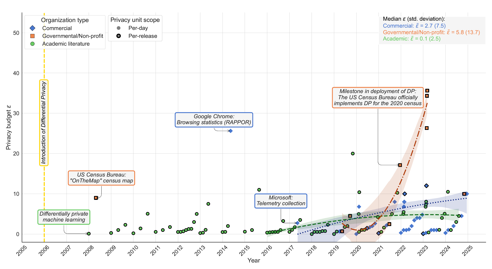
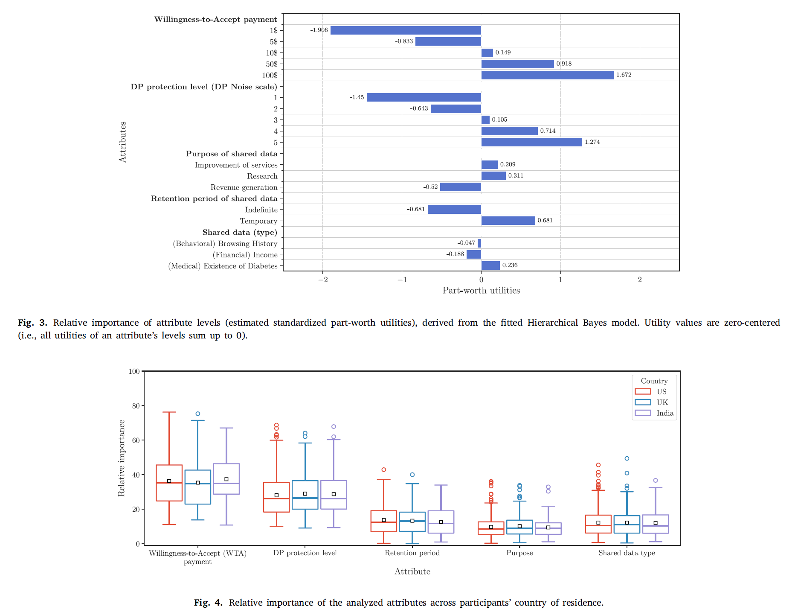
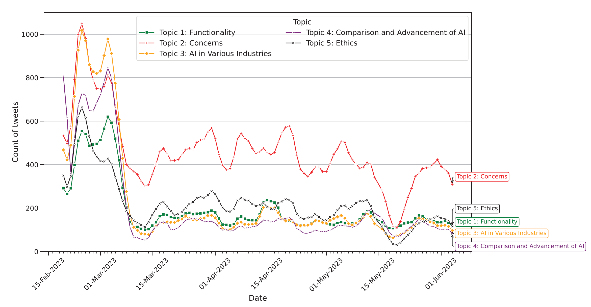
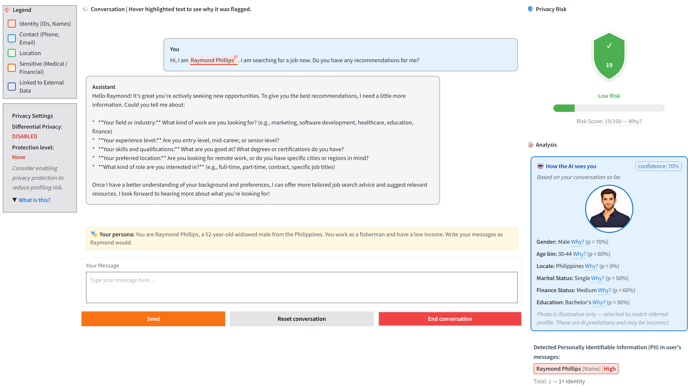
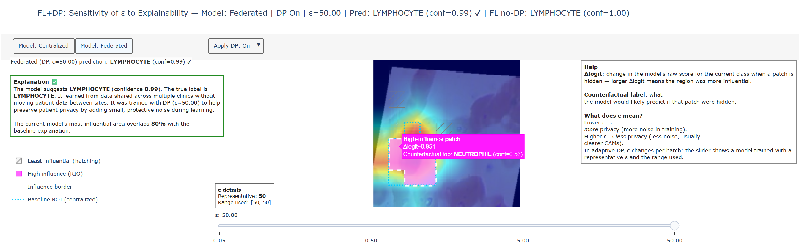
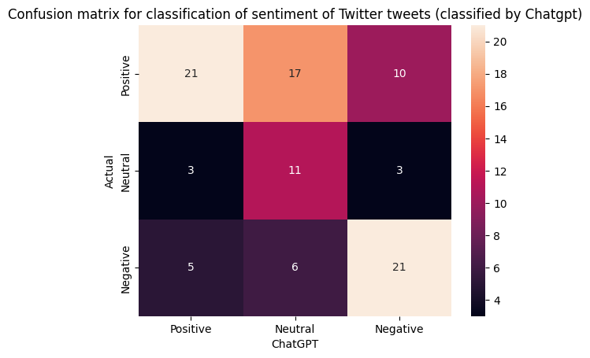

I am a Ph.D. candidate at the Interacting With Technology (IWiT) lab in the School of Industrial & Intelligent Systems Engineering at Tel Aviv University, advised by Prof. Eran Toch.
My research sits at the intersection of usable privacy, human-computer interaction,
and privacy-preserving Machine Learning, with a focus on making differential privacy practical, transparent, and meaningful
for real users and organizations.
I ask questions that formal privacy guarantees alone cannot answer, such as:
How does differential privacy protection shape the way people share
data, and how do those decisions feed back into the AI systems built on it?
In practice, this means designing interfaces and tools that communicate
privacy risks and guarantees to users, helping them see and control what
AI can infer about them, running user studies to understand privacy
decision-making, and analyzing how differential privacy is actually
configured in real-world deployments.
I combine algorithm design, quantitative experiments, and tool development
to bridge the gap between formal privacy guarantees and what users
actually need.
Journal and Conference Articles

IEEE Transactions on Knowledge and Data Engineering · 2025

Decision Support Systems · 2025


A browser-based tool that shows users, in real time, what an LLM-powered chatbot can infer about them from their conversations and lets differential privacy limit that exposure. Built as a research prototype to study inferential privacy leakage in AI assistants.

An interactive visualization tool for exploring the trade-off between differential privacy and explainability in federated image classifiers. Designed to support clinicians in understanding how privacy constraints affect model transparency in clinical decision-support systems.

A Jupyter notebook pipeline for large-scale NLP analysis of short text using the ChatGPT API. Supports sentiment analysis, emotion detection, and topic extraction via zero-shot prompting. Developed as a research instrument for studying public discourse around generative AI on social media.
Lecturer
Tel Aviv University · Undergraduate students
Teaching Assistant
Ben-Gurion University of the Negev & Tel Aviv University · Undergraduate students
Tel Aviv University · Graduate students